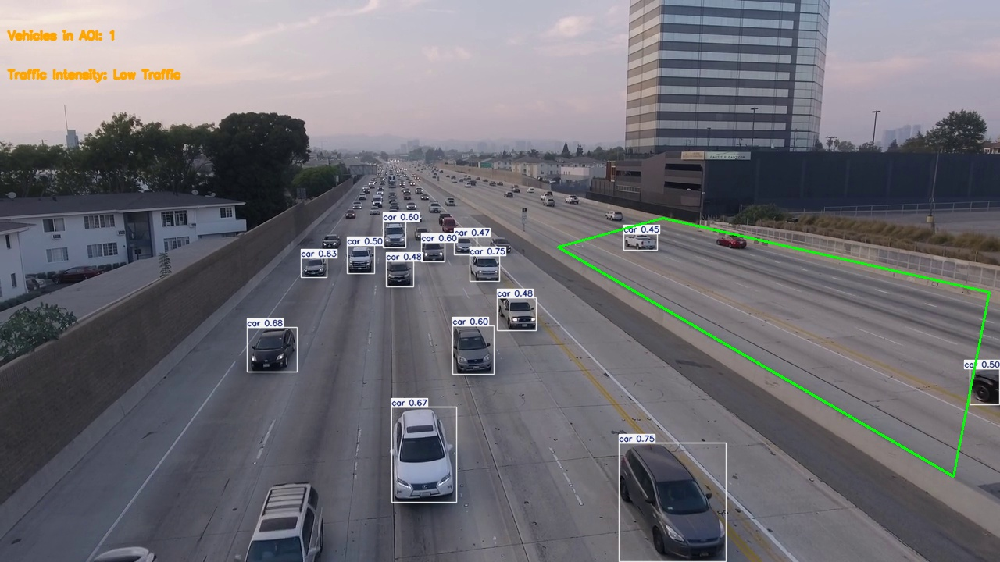

This project leverages the YOLOv11 (You Only Look Once) deep learning model to implement a real-time traffic analysis system. The primary function of the system is to process video frames for vehicle detection, allowing users to evaluate traffic density and classify traffic intensity into four categories: No Traffic, Low Traffic, Medium Traffic, and High Traffic. A key feature of the system is the ability to define an Area of Interest (AOI) through mouse events, focusing the analysis on specific areas within a video frame, such as a particular lane or section of a road. The system runs in real-time, providing immediate feedback on detected vehicles and their distribution. It also logs detailed ground truth data in JSON format for each processed frame, along with traffic analysis results in an Excel file for further review. The project includes two distinct modules: one_way_draw, which is designed for analyzing traffic in one direction (one-way roads), and two_way_static, which uses a predefined AOI for traffic analysis on two-way roads. The code utilizes several dependencies, including OpenCV, NumPy, Ultralytics, pandas, and scikit-learn, and provides flexibility for different traffic environments. The system's capability to process real-time video and analyze traffic conditions offers valuable insights for urban planning, traffic management, and safety assessments.i know there isn't much detail about the project here but fret not just click on view project to get detailed information about the analysis .